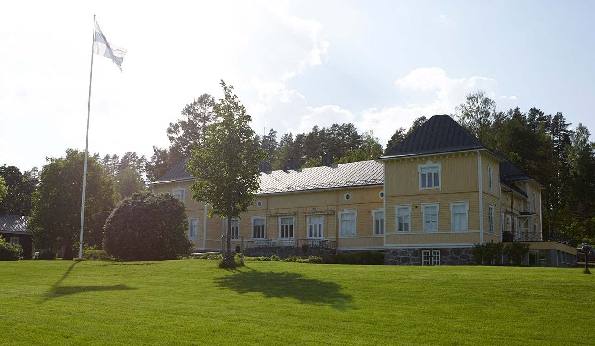
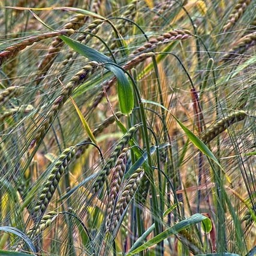
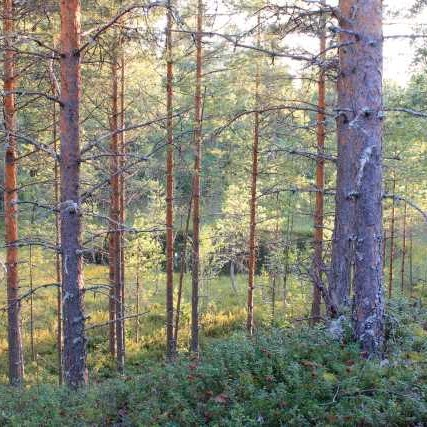
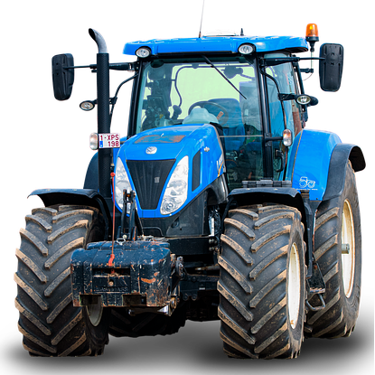
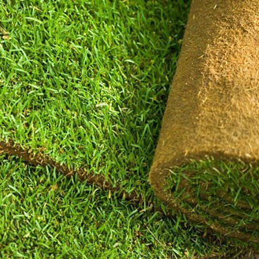

Tervetuloa xxx xxxx
Tähän tulisi lyhyt ns. tervetuloteksti, joka heti lukijalleen tuo kuvan yrityksestä. Värisävyt ovat valikoituneet alustavasti omistajasuvun vaakunan väreistä.

Lyhyt kuvaus historiasta tähän.
Historia

Lyhyt kuvaus maataloudesta tähän.
Maatalous

Lyhyt kuvaus metsätaloudesta tähän.
Metsätalous

Lyhyt kuvaus palveluista tähän.
Palvelumme

Lyhyt kuvaus siirtonurmesta tähän.
Siirtonurmi
Ajankohtaista
Täällä voit lukea yrityksemme viimeisimmät ajankohtaiset uutiset .
- 20.3.2025: Kevätkylvöt ovat alkaneet!
- 15.3.2025: Uusi siirtonurmi on nyt saatavilla.
- 1.3.2025: osallistuu Joroisten musiikkipäiville.
Tapahtumat
Täällä voit lukea yrityksemme tulevista tapahtumista.
- 25.3.2025: Kevätmarkkinat
- 10.4.2025: Pääsiäisjuhla
- 1.5.2025: Vappujuhla